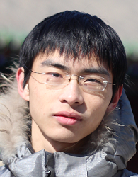

yingxincheng@gmail.com | +86-15105141357 | Hangzhou, Zhejiang, China
Technical Background: Hardware Virtualization(familiar), Algorithm(familiar), Intel x86/64 Architecture(familiar), Java EE(familiar).
Programming Language: C++(2 years), Java(4 years), C(2 years), Python(have experience).
Tools: Vim, Git, Svn, MyEclipse, Mindjet, LaTeX.
Interests: Technology practice, Talented design, Think, Tennis.
Language: iBT-TOFEL 102.
Software Institute, Nanjing University
Tianjin Court Case Management System(Java EE)
Memory behavior monitor for live forensics(C)
Hardware virtualization based late-launch hypervisor(C)
Supreme Court Case Management System - Workflow Subsystem(Java)
Others
Patents
Essays
